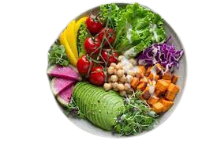
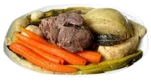

The Dragon Feast, an enchanted Asian dish, combines exotic flavors and bewitched spices, revealing the essence of the mystical Orient, sparking unforgettable taste experiences in the RPG world.

Vegetable Nectarine, an enchanting vegan meal, fuses the magic of vegetables and herbs, bringing vitality and balance to this RPG world imbued with respect for nature.

The Legion Feast, a traditional French dish from the RPG kingdom, combines culinary refinement and gustatory delight, celebrating the art of living and the heritage of the ancients.